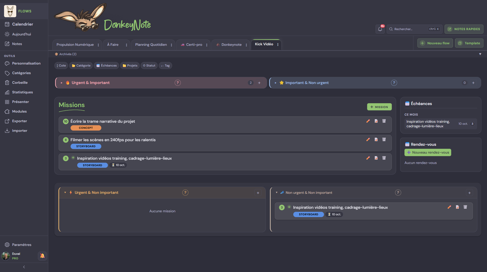
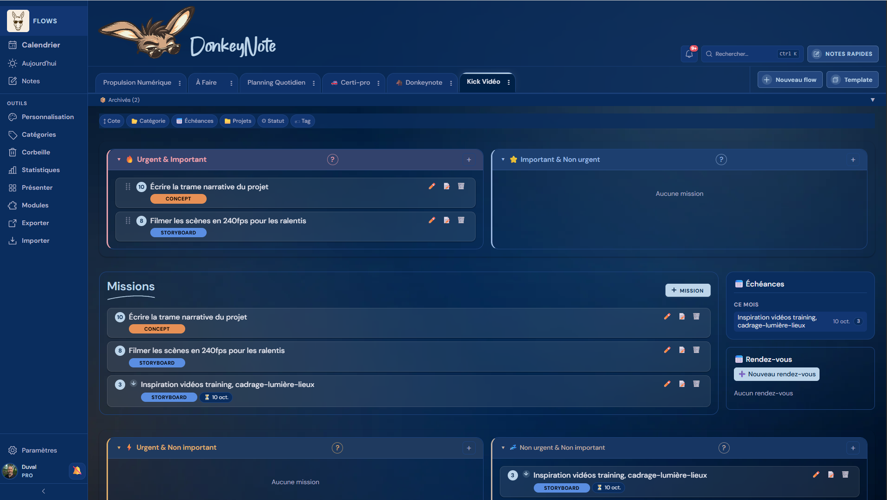

Cliquer sur une capture pour l'agrandir
01 · DonkeyNote : SaaS de gestion de missions (matrice Eisenhower)
🌐 https://donkeynote.app 🎬 Voir la capsule « La cote qui range »
Description du produit : SaaS complet de gestion de missions et de prise de notes conçu, développé et exploité de bout en bout. L'utilisateur attribue une cote de 1 à 10 à chaque mission, et la matrice Eisenhower la classe automatiquement dans le bon cadran, avec ajustement selon l'échéance.
Stack utilisé : React 18, TypeScript, Vite, TanStack Router et Query, CSS Modules, dnd-kit, Quill, PWA et service worker · Node.js, Fastify 5, Zod 4, Drizzle ORM, PostgreSQL sur Supabase (Montréal) · SDK Anthropic (Claude), SDK OpenAI (Whisper) · Clerk, Stripe, Microsoft Graph, AWS SES v2 et S3, Resend, Twilio, Web Push · Fly.io, Cloudflare Pages, Vitest, Playwright, Sentry
- 🤖Classificateur IA : chaque note est classée dans la bonne catégorie par l'IA, avec file de revue et acceptation automatique au-delà de 0,92 de confiance.
- 🎙️Dictée Whisper : transcription vocale dans les notes et les missions, vendue par forfait de 60 minutes à l'unité par Stripe.
- 📅Synchronisation Outlook : OAuth Microsoft Graph, rendez-vous et séries sur le même jour civil des deux côtés, détection des doublons.
- 🔔Rappels sans doublons : courriel (AWS SES), notification push et SMS avec réservation en base avant le départ entre deux serveurs.
- 💳Abonnements et droits : Stripe à 5 paliers d'accès, webhooks signés et droits vérifiés côté serveur.
- 📴PWA hors ligne et bilingue FR/EN : quatre filets contre l'écran blanc après mise à jour, corbeille et import/export en 3 stratégies avec copie de sécurité.
- 🧪Tests et résilience : près de 2 000 tests unitaires et serveur (Vitest) et environ 300 tests E2E Playwright (iPhone SE 320 px, iPhone SE, iPhone 14) sur base Postgres jetable ; sauvegardes en 3 couches testées sur 93 tables.